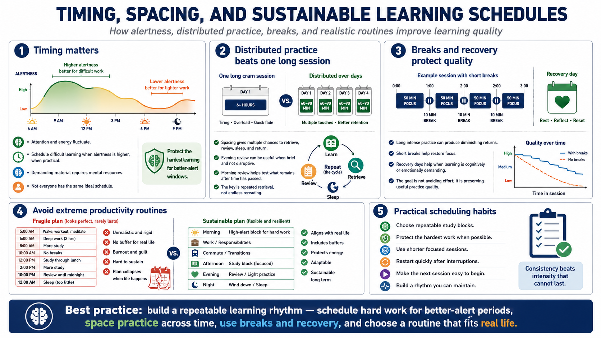

Timing Practice, Review, and Recovery
Connecting to LMS... Progress: in progress

Narration
Timing matters because attention and energy fluctuate. When practical, schedule difficult learning when alertness is higher for the learner or group. This does not mean everyone has the same ideal schedule. It means training plans should respect the fact that demanding material requires mental resources, and those resources are not constant throughout the day.
Distributed practice is often stronger than one long session. Spacing learning across time gives learners multiple chances to retrieve, review, sleep, and return. Evening review can be useful at a general level when it is brief and not disruptive. Morning review can help learners test what remains available after time has passed. The key is repeated retrieval, not endless rereading.
Breaks and recovery days matter for demanding learning. A full day of intense practice may produce diminishing returns if attention collapses. Short breaks can restore focus. Recovery days can help when learning is emotionally or cognitively demanding. The goal is not to avoid effort. The goal is to preserve enough quality that practice remains useful.
Avoid extreme routines and idealized productivity advice. Real learners have jobs, caregiving, commutes, health needs, and interruptions. A sustainable schedule is better than a perfect schedule that collapses after three days. Align practice with real life: choose repeatable blocks, protect the hardest work when possible, and make it easy to restart after interruptions.